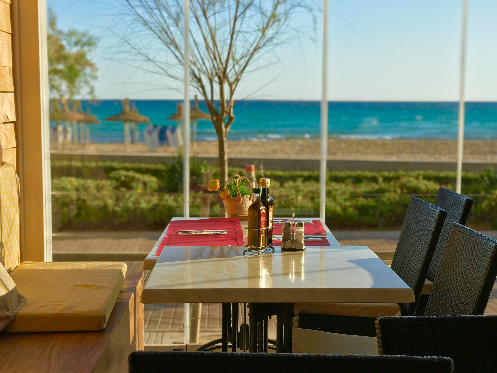

Perched right on the waterfront in Taniti City, The Taniti Fish House is the island's most celebrated dining destination. Every dish is built around the morning's catch — locally sourced yellowfin tuna, reef fish, and fresh prawns prepared with a Polynesian twist.
With open-air seating over the water, sea breezes, and a menu that changes daily based on what the fishermen bring in, no two visits are ever the same. Reservations are strongly recommended, especially at sunset.
Reserve a TableSign up for the newsletter and stay up to date